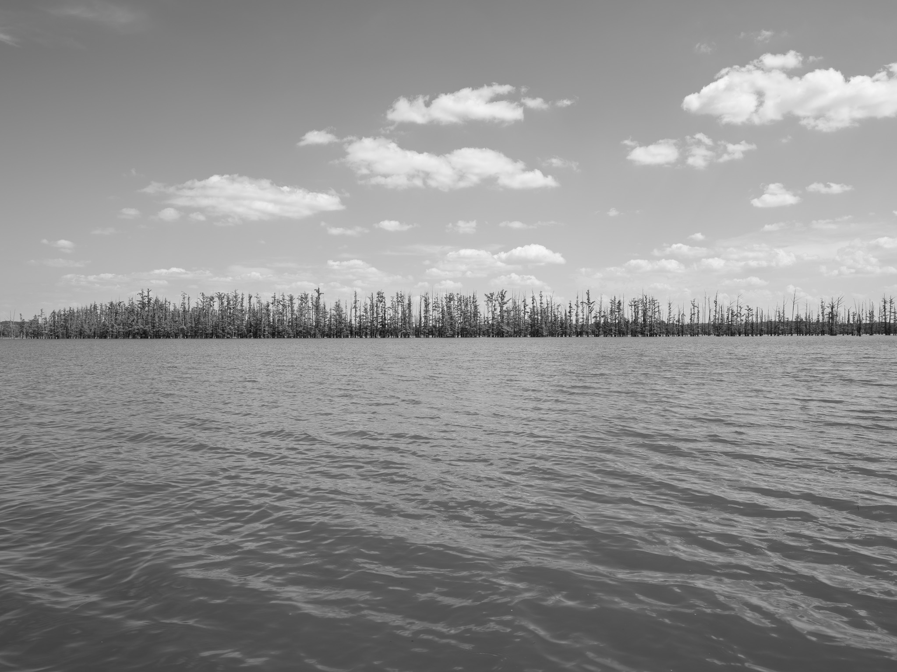
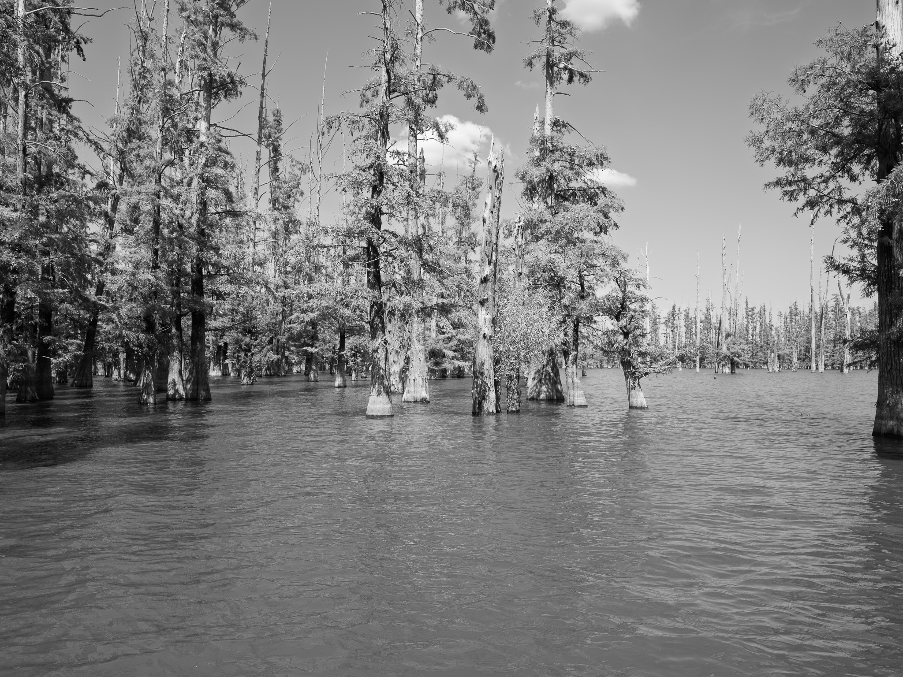
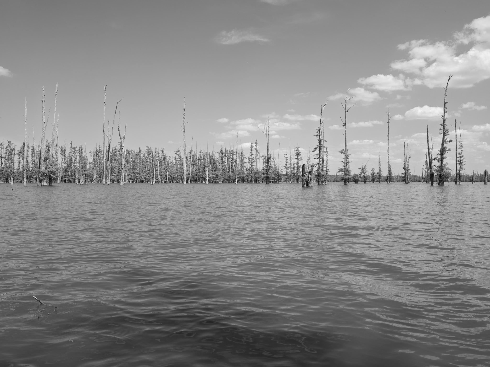
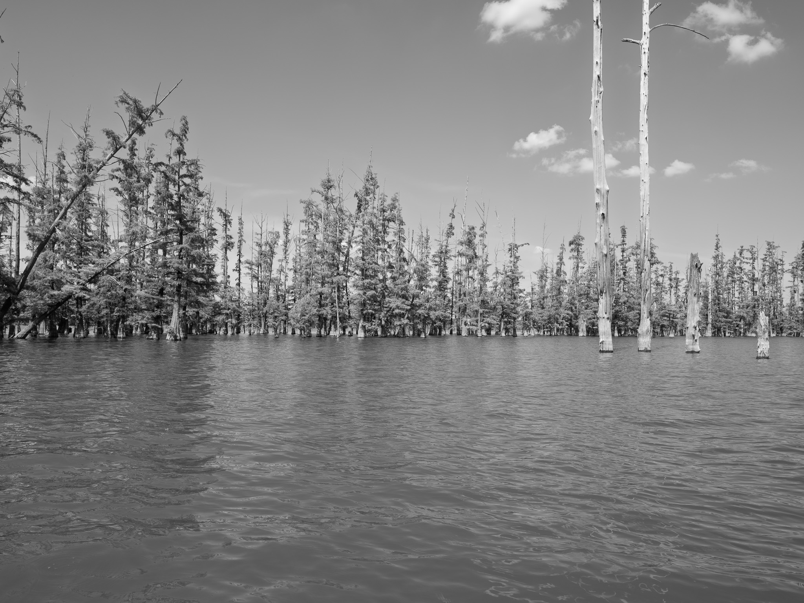
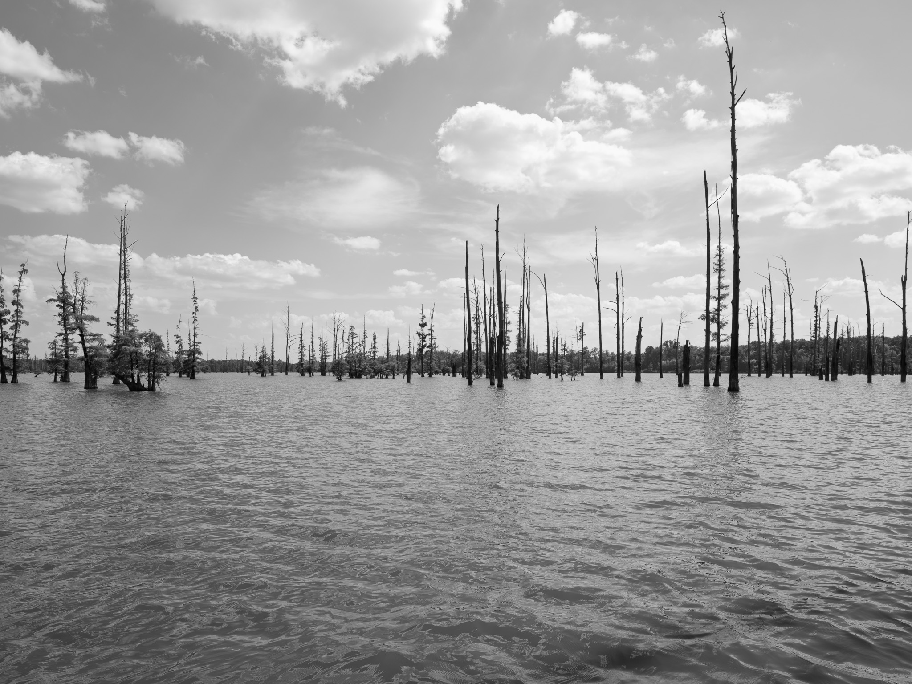
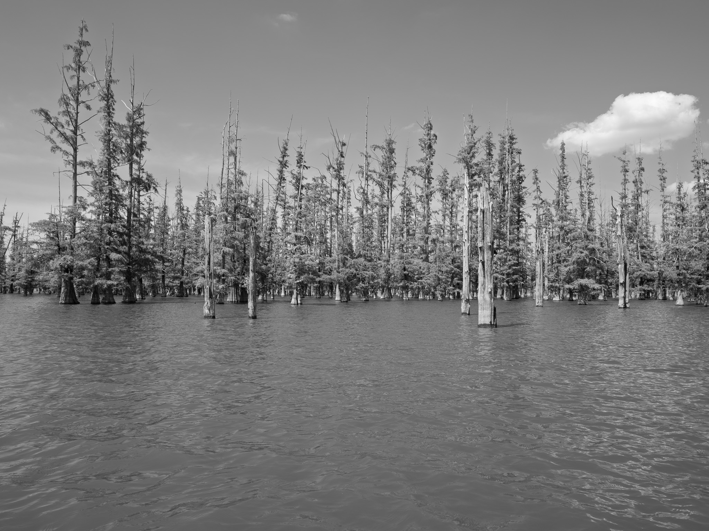
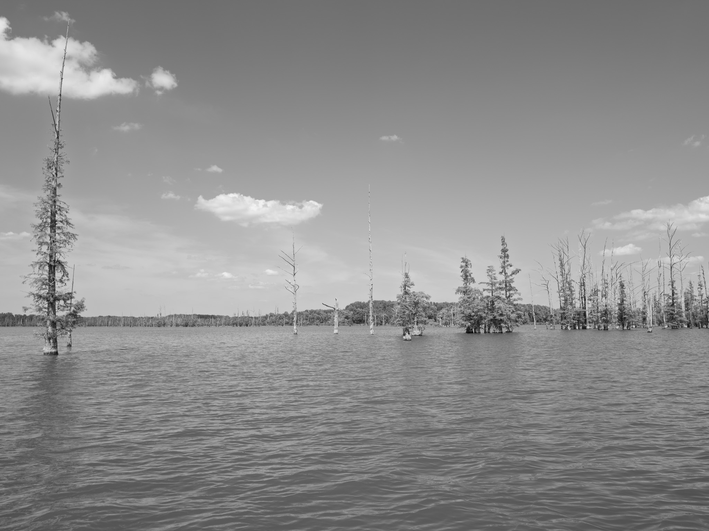

Public Lands Institute
Map
Images
Archive
About
Hovey Lake Fish and Wildlife Area
IN

Hovey Lake Fish and Wildlife Area 1 · 2026-08-30
_DSF4387.jpg

Hovey Lake Fish and Wildlife Area 2 · 2026-08-30
_DSF4395.jpg

Hovey Lake Fish and Wildlife Area 3 · 2026-08-30
_DSF4399.jpg

Hovey Lake Fish and Wildlife Area 4 · 2026-08-30
_DSF4402.jpg

Hovey Lake Fish and Wildlife Area 5 · 2026-08-30
_DSF4414.jpg

Hovey Lake Fish and Wildlife Area 6 · 2026-08-30
_DSF4418.jpg

Hovey Lake Fish and Wildlife Area 7 · 2026-08-30
_DSF4423.jpg
View all 7 images →
← Bell Smith Springs Recreation Area
Falls of the Ohio State Park →